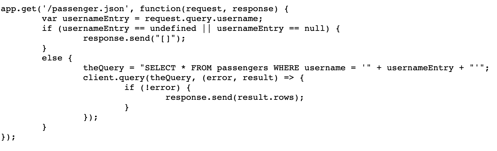
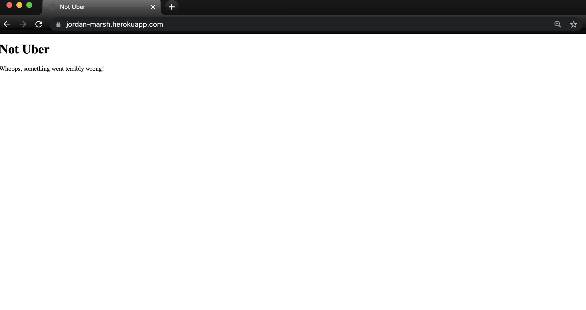
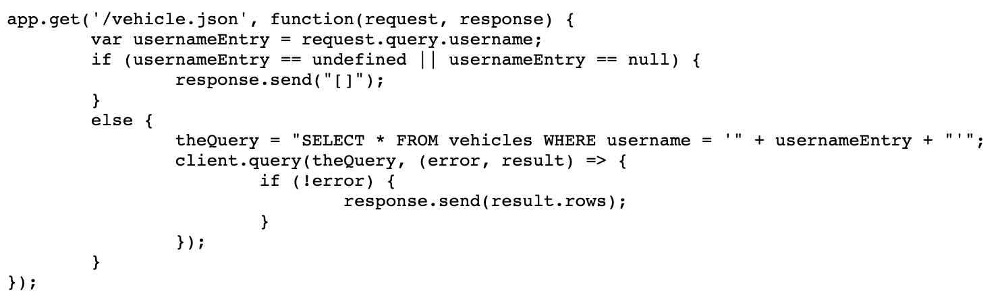

Product is a ride-hailing service that is able to store and send passenger and vehicle data to clients. Uses Heroku and Heroku Postgres to deploy web app. I am hired to write this report on the security and privacy problems of this web app.
I mainly used curl on the command line and URL parameter manipulation.
For curl, I tried feeding different strings into the username parameter since lat and lng are restricted to floats. I used this to test routes that use HTTP POST.
For URL manipulation, I also tried feeding strings to username param. I used this to test routes that use HTTP GET.
There are two main areas of security concerns. First the website is completely susceptible to attackers who are able to modify the website in anyway they like (redirect to other pages, show annoying messages, add/remove content) through Cross Site Scripting. An attacker can also crash the website.
Second, an attacker can also hack into the databases linked to the webapp and retrieve, delete and modify information stored in those databases through SQL injection. This is very concerning especially if there will be sensitive information stored in those databases (passwords, financial information etc.)
Location: https://jordan-marsh.herokuapp.com/passenger.json
Threat level: High. Attacker can possibly retrieve sensitive information or delete entire table.
Description: Source code took url parameter from user and directly used to build a SQL query without sanitization leading to possible injection.
Attack: https://jordan-marsh.herokuapp.com/passenger.json?username=invalid'; DROP TABLE passengers --
Proof: The website will lose functionality and all data in the passengers table will be lost.
Resolution: Santizie user input by escaping special characters such as single and double quotes before passing it into a query. Add usernameEntry = validator.escape(usernameEntry) after 1st line in the image.
Location: https://jordan-marsh.herokuapp.com/vehicle.json
Threat level: High. Attacker can possibly retrieve sensitive information or delete entire table.
Description: Source code took url parameter from user and directly used to build a SQL query without sanitization leading to possible injection.
Attack: https://jordan-marsh.herokuapp.com/passenger.json?username=invalid'; DROP TABLE vehicles --
Proof: The website will lose functionality and all data in the vehicle table will be lost.
Resolution: Santizie user input by escaping special characters such as single and double quotes before passing it into a query. Add usernameEntry = validator.escape(usernameEntry) after 1st line in the image.
Location: https://jordan-marsh.herokuapp.com/rides
Threat level: Medium. Attacker has the ability to change DOM but not as servere as SQL injection that can steal credentials.
Description: User input is not sanitized before inserting into databse which in turn is treated as executable code at the main page.
Attack: This embeds a youtube video on the main page
curl --data 'username=<iframe width="1424" height="626" src="https://www.youtube.com/embed/2k0SmqbBIpQ" title="YouTube video player" frameborder="0" allow="accelerometer; autoplay; clipboard-write; encrypted-media; gyroscope; picture-in-picture" allowfullscreen></iframe>&lat=1&lng=1' https://jordan-marsh.herokuapp.com/rides
Proof:
Resolution: The recommendations above should sanitize user input to the databse. Too err on the side of caution, add var sanitized_username = validator.espace(esult.rows[count].username); below line 10 of app.get(/)
In conclusion always sanitize user input by escaping them. This applies if more code needs to be added and more possible injection points are created.